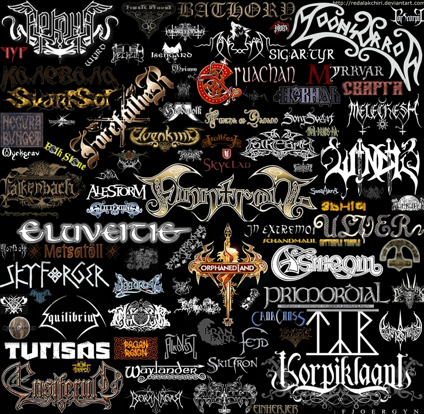
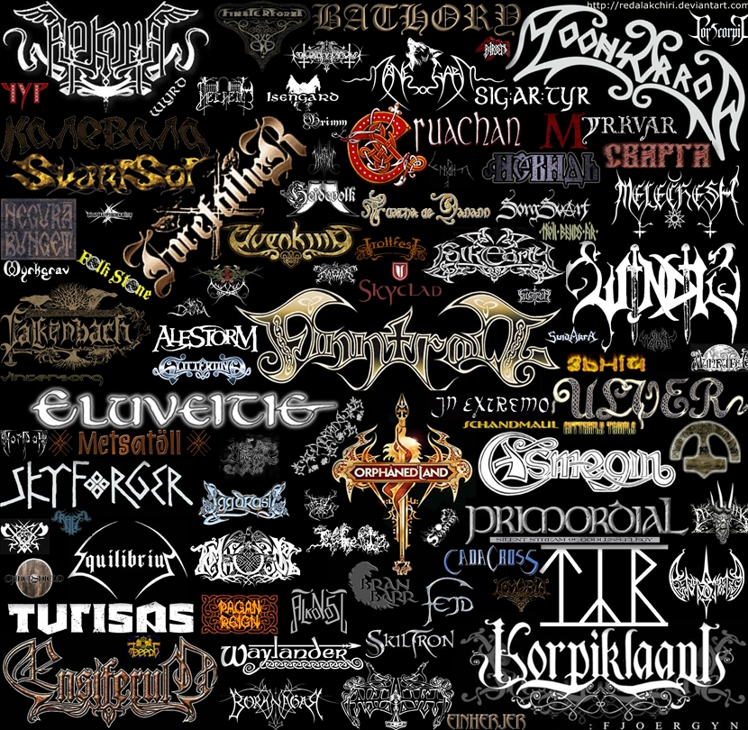

|  |
El folk metal es un subgénero del heavy metal desarrollado principalmente en Europa a partir de 1990. Como el nombre sugiere este género es una fusión de las distintas vertientes del heavy metal con la música folk tradicional, por lo que incluye un amplio uso de instrumentos y cantos tradicionales
|  |